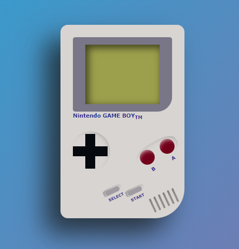

Video Consola Portatil

Reproduccion de la imagen frontal de una Video Consola Portatil en este caso una Nintendo Game Boy de los años 90,utilizando HTML para su estructuracion y funcionabilidad, mediante CSS se ha creado la parte visual de la video consola asi como efectos de pulsacion de botones, implementando Flexbox hemos conseguido el efecto del altavoz en el cuerpo y con el uso de JavaScript se han conseguido efectos en la pantalla al pulsar los botones
Tabla de contenidos
- Configuración
- Instalación
- Uso
- Licencia
- Créditos y contacto
Configuración
No se requiere configuración. Sólo hay que descargar el git y ejecutar abrir el archivo videoConsola.html en el navegador de tu dispositivo.
Instalación
No requiere instalacion de ningun programa ni aplicacion
Uso
Simulador de Video Consola Portátil. Mediante animaciones realizadas en HTML, CSS y JavaScript simulamos el funcionamiento de una video consola portatil de los años 90.
- Botón START: usando JavaScript llamamos una funcion mediante onclick que cambia el color de fondo de la Pantalla
- Botón SELECT: usando JavaScript llamamos una funcion mediante onclick que restablece el color de inicio de la pantalla, despues de pulsar el Botón START
- Botones A B | SELECT/START : Mediante CSS simulamos el efecto de pulsación a traves de :hover. Se consigue el efecto eliminando la sombra y estableciendo el puntero como cursor
Licencia
No dispone de licencia, ya que es una practica de HTML,CSS y JavaScript
Créditos y contacto
Carola Lopez | jorcaroli.lopez@gmail.com